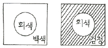

자동차보수도장기능사 (2014-04-06 기출문제)
1과목: 임의 구분
1. 4륜 정렬방식의 승용자동차를 전체 정렬 작업 시 순서로 가장 옳은 것은?
- 후륜캠버 – 후륜 토 – 전륜캠버 및 캐스터 – 전륜 토
- 후륜 토 – 후륜캠버 - 전륜 토 – 전륜캠버 및 캐스터
- 전륜 토 – 전륜캠버 및 캐스터 – 후륜 토, 후륜캠버
- 후륜 토 – 전륜 토, 후륜캠버 – 전륜캠버 및 캐스터
(정답률: 61%)

2. 충분한 강성과 강도가 요구되며 자동차의 기본 골격이 되는 부분은?
- 패널(panel)
- 엔진(engine)
- 프레임(frame)
- 범퍼(bumper)
(정답률: 91%)
3. 점화코일에 2차 전압의 기본원리로 가장 옳은 것은?
- 렌쯔의 법칙
- 플레밍의 오른손법칙
- 자기유도, 상호유도작용
- 전자파 유도 작용
(정답률: 79%)
4. 주어진 온도에서 물질의 단위체적당 질량을 무엇이라 하는가?
- 밀도
- 비체적
- 비열
- 압력
(정답률: 82%)
5. 승용차의 리어 바디(rear body)를 구성하는 구성품이 아닌 것은?
- 리어 범퍼(rear bumper)
- 트렁크 도어(trunk door)
- 대쉬 패널(dash panel)
- 리어 패널(rear panel)
(정답률: 84%)
6. 앞바퀴의 중심을 지나는 수직면에서 자동차의 맨 앞부분까지 수평거리는?
- 중심고
- 앞 오버행
- 램프각
- 윤거
(정답률: 81%)
7. 프런트 사이드 멤버로부터 리어 사이드 멤버에 이르는 보디 전체에 해당되는 것은?
- 리어 보디
- 펜더 보디
- 사이드 보디
- 언더 보디
(정답률: 64%)
8. 자동차에서 흔히 사용하는 진공압을 %로 나타낼 때 10% 진공압은 얼마(mmHg)인가?
- 76mmHg
- 760mmHg
- 785mmHg
- 1033mmHg
(정답률: 64%)
9. 타이어 편마모의 원인과 가장 거리가 먼 것은?
- 공기압 부족 또는 과다
- 휠 밸런스 불량
- 토인 불량
- 디스크 런 아웃 불량
(정답률: 80%)
10. 4행정 엔진의 크랭크축이 8회전 하였다면 이 엔진은 몇 사이클을 수행한 것인가?
- 2 사이클
- 4 사이클
- 6 사이클
- 8 사이클
(정답률: 81%)
11. 베이스코트 건조에 대한 설명 중 맞는 것은?
- 기온이 높을수록 건조가 빠르다.
- 스프레이건 압력이 낮을수록 건조가 빠르다.
- 드라이 형태로 스프레이가 되면 건조가 느리다.
- 토출량이 많을수록 건조가 빠르다.
(정답률: 74%)
12. 박리(벗겨짐)현상의 발생 원인이 아닌 것은?
- 구도막이나 도막면의 연마부족 시
- 이물질제거 부족 시
- 경화제 혼합량 부족 시
- 구도막의 거친 샌드페이퍼로 연마 시
(정답률: 65%)
13. 상도 도장 작업에서 초벌도장의 목적이 아닌 것은?
- 상도부분 은폐 처리
- 도장면의 부착력 증진
- 크레이터링 발생 여부 판단
- 프라이머 서페이서 면에 상도 도료 흡수 방지
(정답률: 53%)
14. 도료에 높은 압력을 가하여 작은 노즐 구멍으로 도료를 밀어 작은 입자로 분무시켜 도장하는 방법은?
- 에어스프레이 도장
- 에어리스 스프레이 도장
- 정전도장
- 전착도장
(정답률: 68%)
15. 메탈릭 색상 조색에서 메탈릭 입자의 역할을 바르게 설명한 것은?
- 혼합 시 색상의 명도를 어둡게 한다.
- 혼합 시 거의 모든 광선을 반사시키는 도막 내의 작은 거울 역할을 한다.
- 혼합 시 채도가 높아진다.
- 혼합 시 명도나 채도에 영향을 주지 않는다.
(정답률: 72%)
16. 자동차도장 색상차이의 원인 중 자동차 생산업체의 원인이 아닌 것은?
- 공장 별로 칼라차이 발생
- 새로운 타입의 상도도료 적용
- 도료제조용 안료 변경
- 신차도료의 납품업체의 변경
(정답률: 64%)
17. 다음 중 용제 증발형 도료에 해당되지 않는 것은?
- 우레탄 도료
- 래커 도료
- 니트로셀룰로오스 도료
- 아크릴 도료
(정답률: 55%)
18. 메탈릭 도료의 도장 시 정면 색상을 밝게 보이도록 하는 도장 조건으로 옳은 것은?
- 스프레이건의 운행속도가 느리다.
- 도료 토출량이 많다.
- 시너의 증발속도가 빠르다.
- 도장간격이 짧다.
(정답률: 66%)
19. 다음 중 도막제거의 방법이 아닌 것은?
- 샌더의 의한 제거
- 리무버에 의한 제거
- 샌드 블라스터에 의한 제거
- 에어블로잉에 의한 제거
(정답률: 79%)
20. 보수도장 후 상도에서 생길 수 있는 결함이 아닌 것은?
- 오렌지 필
- 퍼티 단차
- 티 결함
- 흐름
(정답률: 70%)
2과목: 임의 구분
21. 도장 용어 중 셋팅 타임이란?
- 건조가 되기를 기다리는 시간
- 열을 주지 않고 용제가 자연 휘발하는 시간
- 열처리를 하는 시간
- 열처리를 하고 난 후 식히는 시간
(정답률: 74%)
22. 보수도장 시 탈지가 불량하여 발생하는 도막의 결함은?
- 오렌지 필(Orange Peel)
- 크레터링(Cratering)
- 메탈릭(Metallic) 얼룩
- 흐름(Sagging and Running)
(정답률: 69%)
23. 연마재의 구조에서 연마입자의 접착 강도를 높이는 것은?
- 메이크 코트(Make coat)
- 오픈 코트(Open coat)
- 크로즈 코트(Close coat)
- 사이즈 코트(Size coat)
(정답률: 51%)
24. 수지퍼티를 이용한 플라스틱 부품의 보수방법 중 틀린 것은?
- 수세 및 탈지작업을 철저히 한다.
- 표면조정 작업 및 파손 부위에 V홈 작업을 한다.
- 수지퍼티의 주제와 경화제의 비율은 보통 100 : 1이다.
- PP범퍼의 경우 전용 프라이머를 얇게 도정한다.
(정답률: 66%)
25. 메탈릭(은분) 색상으로 도장하기 위한 서페이서(중도) 동력공구 연마 시 마무리 연마지로 가장 적합한 것은?
- P220 ~ P300
- P400 ~ P600
- P800 ~ P1000
- P100 ~ P1200
(정답률: 59%)
26. 다음 중 상도투명용 도료에 사용되는 수지로서 요구되는 성질이 아닌 것은?
- 광택성
- 방청성
- 내마모성
- 내용제성
(정답률: 51%)
27. 광택용 동력공구 중 공기 공급식에 대한 설명으로 바르지 못한 것은?
- 전동식에 비해 가볍다.
- 전동식에 비해 싸다.
- 전압조정기로 회전수를 조정한다.
- 부하 시 회전이 불안정하다.
(정답률: 61%)
28. 자동차 표면의 굴곡 및 요철에 도포하여 평활성을 주는데 가장 적합한 퍼티는?
- 폴레에스테르 퍼티
- 아미노알키드 퍼티
- 오일 퍼티
- 래커 퍼티
(정답률: 71%)
29. 스프레이 도장 작업시 필요로 하는 설비가 아닌 것은?
- 패널건조대
- 도장부스
- 콤프레셔
- 에어트랜스포머
(정답률: 65%)
30. 다음 중 플라스틱의 특징이 아닌 것은?
- 복잡한 형상으로 제작하기가 쉽다.
- 유기용제에 침식되거나 변형되지 않는다.
- 저온에서 경화하고 고온에서 열 변형이 발생한다.
- 약품이나 용제에 내성을 갖는다.
(정답률: 54%)
31. 도막의 골격이 되어 피도물을 보호하고 도료의 화학적 특징을 결정짓는 중요한 역할을 하는 요소는?
- 수지
- 안료
- 첨가제
- 용제
(정답률: 61%)
32. 블렌딩 도장에서 메탈릭 상도 도막의 작은 손상부위를 연마할 때 가장 적정한 연마지는?
- P240 ~ 320
- P400 ~ 500
- P600 ~ 800
- P1200 ~ 1500
(정답률: 58%)
33. 3코트 펄에 관한 설명으로 틀린 것은?
- 알루미늄의 반사효과를 극대화한 도료이다.
- 펄이 가지고 있는 광학적인 성질을 이용한 것이다.
- 은폐성이 약한 밝은 칼라의 도료 설계가 가능하다.
- 칼라베이스의 색감을 노출하여 깊은 색감을 나타낸다.
(정답률: 54%)
34. 솔리드 색상의 조색 규칙 중 틀린 것은?
- 조색제는 소량씩 첨가하여 색상을 맞춘다.
- 색상환에서 인접한 색상을 혼합하면 선명한 색을 얻을 수 있다.
- 보색의 사용은 금하는 것이 좋다.
- 한번에 2가지 이상의 색상을 혼합하여 시간을 단축한다.
(정답률: 80%)
35. 다음 중 도료 저장 중(도장 전) 발생하는 결함으로 바른 것은?
- 겔(gel)화
- 오렌지 필
- 흐름
- 메탈릭얼룩
(정답률: 81%)
36. 다음 중 메탈릭 색상 조색작업 순서로 올바른 것은?(오류 신고가 접수된 문제입니다. 반드시 정답과 해설을 확인하시기 바랍니다.)
- 명도-채도-색상
- 색상-채도-명도
- 명도-색상-채도
- 채도-명도-색상
(정답률: 48%)
37. 다음 도료 중 하도 도료에 해당하지 않는 것은?
- 워시 프라이머
- 에칭 프라이머
- 래커 프라이머
- 프라이머-서페이서
(정답률: 73%)
38. 탈지를 철저히 하지 않았을 때 발생할 수 있는 결함은?
- 흐름
- 연마자국
- 벗겨짐
- 흡수에 의한 광택저하
(정답률: 63%)
39. 안전·보전표지의 종류와 형태에서 안전표지의 종류로 틀린 것은?
- 금지 표지
- 허가 표지
- 경고 표지
- 지시 표지
(정답률: 81%)
40. 그라인더 작업 시 안전 및 주의사항으로 틀린 것은?
- 숫돌의 교체 및 시험운전은 담당자만 하여야 한다.
- 그라인더 작업에는 반드시 보호안경을 착용 하여야 한다.
- 숫돌의 받침대가 3mm이상 열렸을 때에는 사용하지 않는다.
- 숫돌작업은 정면에서 작업하여야 한다.
(정답률: 80%)
3과목: 임의 구분
41. 토크렌치 사용 시 주의사항으로 틀린 것은?
- 볼트나 너트를 조일 때는 토크를 반드시 확인한다.
- 토크는 규정 값과 정확히 일치 되도록 한다.
- 파이프 등 연장대를 이용하여 적은 힘으로 조인다.
- 토크 렌치는 몸 안쪽으로 당겨서 사용한다.
(정답률: 84%)
42. 안전·보건표지의 종류와 형태에서 방진 마스크 착용표지의 종류로 옳은 것은?
- 금지표지
- 경고표지
- 지시표지
- 안내표지
(정답률: 81%)
43. 볼트나 너트를 조이거나 풀 때 가장 부적합한 공구는?
- 복스 렌치
- 소켓 렌치
- 오픈 엔드 렌치
- 바이스 플라이어 렌치
(정답률: 76%)
44. 유기 용제의 특징으로 틀린 것은?
- 유기용제는 휘발성이 약하다.
- 작업장 공기 중에 가스로서 포함되는 경우가 많으므로 호흡기로 흡입된다.
- 유기용제는 피부에 흡수되기 쉽다.
- 유기용제는 유지류를 녹이고 스며드는 성질이 있다.
(정답률: 78%)
45. 스프레이 부스에서 도장 작업할 때 반드시 착용하지 않아도 되는 것은?
- 방독 마스크
- 앞치마
- 내용제성 장갑
- 보안경
(정답률: 86%)
46. 스프레이 부스 내부의 최상 공기흐름 속도는?
- 0.1 ~ 0.2m/s
- 0.2 ~ 0.3m/s
- 0.6 ~ 1.0m/s
- 1.5 ~ 2.0m/s
(정답률: 67%)
47. 전기 열풍기 사용 시 안전사항으로 틀린 것은?
- 전원 콘센트를 점검·확인한다.
- 습기가 많은 곳에 보관한다.
- 흡입구를 막지 않는다.
- 전원 코드에 무리한 힘을 가하지 않는다.
(정답률: 94%)
48. 폴리에스테르수지 도료의 보관법으로 옳은 것은?
- 열이나 빛에 의하여 중합되지 않도록 냉임소에 보관한다.
- 자외선이 많이 비치는 곳에 보관한다.
- 경화제를 혼합하여 보관한다.
- 실내온도가 가능한 높은 곳에 보관한다.
(정답률: 80%)
49. 그림과 같이 배치하였을 때 회색이 바탕색에 따라 다르게 보이는 현상은?

- 채도대비
- 잔상대비
- 색상대비
- 명도대비
(정답률: 68%)
50. 빨간색에 흰색을 섞었을 때의 변화로 옳은 것은?
- 명도가 낮아지고, 채도는 높아진다.
- 명도와 채도 모두 높아진다.
- 명도와 채도 모두 낮아진다.
- 명도는 높아지고, 채도는 낮아진다.
(정답률: 54%)
51. 다음 중 중성색 계통의 색상조화는?
- 주황과 연두
- 녹색과 연두
- 보라와 빨강
- 자주와 남색
(정답률: 67%)
52. 색의 중량감에 대한 설명으로 옳은 것은?
- 주로 채도에 따라 좌우된다.
- 무거운 느낌의 색은 경쾌한 색이다.
- 난색 계통은 무겁게, 한색 계통은 가볍게 느껴진다.
- 색 기미에 따라 검정, 파랑, 빨강 순서대로 가볍게 느껴진다.
(정답률: 51%)
53. 다음 중 가시광선의 설명으로 틀린 것은?
- 가시광선의 파장 영역은 380nm ~ 780nm이다.
- 인간이 볼 수 있는 빛의 파장 영역을 말한다.
- 인간이 시지각적인 감각을 갖게 되는 가시 영역을 말한다.
- 자외선과 X-선, 적외선과 전파 등도 가시광선이라고 한다.
(정답률: 78%)
54. 색의 3속성 중 인간의 눈에 가장 예민하게 반응을 하는 것은?
- 색상
- 명도
- 채도
- 순도
(정답률: 73%)
55. 빛의 삼원색은 R, G, B 이다. 이들 빛의 3원색에 대한 2차색이 아닌 것은?
- cyan
- magenta
- yellow
- black
(정답률: 79%)
56. 다음 중 색채 조화의 공통되는 원리가 아닌 것은?
- 질서의 원리
- 유사의 원리
- 면적의 원리
- 대비의 원리
(정답률: 59%)
57. 촉각은 시각을 보조하여 색의 특성이나 재료감 등을 더욱 증가 시키는 역할을 한다. 촉각으로 느끼는 감각이 잘못 연결된 것은?
- 윤택감 느낌 – 깊은 톤의 색
- 광택 느낌 – 고명도이고 고채도의 색
- 부드러운 느낌 – 밝은 핑크, 밝은 하늘색, 밝은 노란색
- 딱딱한 느낌 – 상대적으로 어둡고 채도가 높은 색
(정답률: 47%)
58. 인상파 화가들 가운데서도 점묘파로 불리는 화가 그림에서 볼 수 있는 색의 혼합 기법은?
- 감법혼색
- 가산혼합
- 병치혼합
- 감산혼합
(정답률: 70%)
59. 한색이나 저명도, 저채도의 색은 실제보다 어떤 성향으로 보이는가?
- 수축
- 팽창
- 진출
- 주목
(정답률: 71%)
60. 다음 중 조도색차계의 용도를 가장 옳게 설명한 것은?
- 광원의 색 온도를 측정한다.
- 인쇄물의 색 농도를 측정한다.
- 대상물체의 분광반사율을 측정한다.
- 도장의 색 변화를 측정한다.
(정답률: 49%)